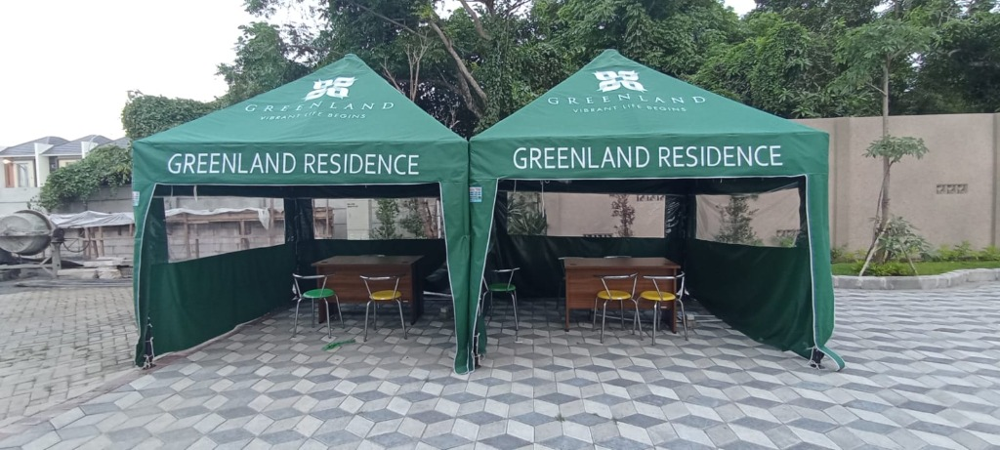

Pabrik & Produsen Tenda Jateng Murah Kirim ke Seluruh Jawa Tengah
Sedang mencari tempat pembuatan atau supplier tenda Jateng dengan harga pabrik yang murah dan mutu terjamin? Wiguna Tenda melayani pemesanan aneka tenda kerucut pameran, tenda bazar promosi UMKM, tenda limas, lipat praktis, serta terpal custom dengan pengiriman ekspedisi cargo cepat dan murah ke Semarang, Solo, Kudus, Magelang, Pati, Rembang, dan seluruh wilayah Jawa Tengah.

Katalog Produk Tenda Murah Berkualitas untuk Wilayah Jateng
Pilihan ukuran standar maupun custom sesuai pesanan instansi, perusahaan, dan UMKM di Jawa Tengah.

Tenda Kerucut Jawa Tengah
Tenda kerucut modern yang sering dipesan instansi pemerintahan dan promosi swasta di Semarang, Solo, dan Kudus. Atap lancip aerodinamis tahan guyuran hujan deras.
- Ukuran Populer: 2x2m, 3x3m, 4x4m, 5x5m
- Rangka: Pipa besi hollow bulat / kotak anti penyok
- Bahan Atap: Terpal Uno Jerman / Tarpaulin Korea
- Sablon Logo: Bebas pesan branding sponsor & instansi

Tenda Bazar & Promosi Jateng
Solusi tenda dagang murah untuk lapak UMKM kuliner di Simpang Lima Semarang, Solo Grand Mall, CFD, pasar kaget, dan pameran rakyat se-Jawa Tengah.
- Ukuran Populer: 2x2m, 2x3m, 3x3m, 3x4m
- Keunggulan: Rangka kokoh, mudah dirakit & dibongkar
- Dinding: Tersedia mika transparan atau polos
- Harga: Grosir tangan pertama tanpa perantara

Tenda Limas (Piramida) Jateng
Bentuk piramida luas tanpa tiang di bagian tengah, sangat pas untuk posko mudik lebaran jalur Pantura Jateng, posko proyek infrastruktur, dan stand bazar pameran.
- Ukuran Populer: 3x3m, 3x4m, 4x4m, 4x6m
- Bahan Rangka: Pipa besi presisi sambungan sok
- Ketahanan: Tahan panas terik dan hujan lebat
- Custom Sablon: Logo instansi / sponsor kegiatan

Tenda Lipat Portable Jateng
Tenda lipat praktis sistem folding frame yang bisa didirikan dalam 5 menit. Sangat cocok bagi sales dealer, pedagang musiman, stan kuliner kaki lima di Jawa Tengah.
- Ukuran: 2x2m, 2x3m, 3x3m, 3x4.5m
- Rangka: Besi hollow powder coating anti karat
- Kain Atap: Oxford D600 / D800 waterproof tahan air
- Mobilitas: Ringan & muat di bagasi mobil keluarga

Tenda Pesta & Persewaan Jateng
Fabrikasi tenda plafon serut hajatan dan tratak panggung untuk pengusaha jasa persewaan alat pesta (wedding & event) di wilayah Solo Raya, Semarang, dan sekitarnya.
- Bentang: Lebar 4m, 6m, 8m, 10m ke atas
- Rangka: Pipa besi hitam / galvanis tebal kokoh
- Dekorasi: Plafon serut warna custom elegan
- Harga: Paket partai murah untuk peremajaan sewa

Terpal Custom & Tenda Khusus Jateng
Pembuatan terpal penutup muatan armada truk ekspedisi Pantura Jawa Tengah, kolam budidaya perikanan, serta kanopi awning kain Sunbrella cafe di Semarang & Solo.
- Bahan: Terpal Plastik A3 - A12, Tarpaulin PVC Orchid tebal
- Pengerjaan: Pres panas presisi anti bocor & ring mata ayam
- Ukuran: Bebas pesan panjang x lebar berapa saja
- Ekspedisi: Dikirim paket kargo aman sampai alamat
Pengiriman Cepat Cargo ke Seluruh Jawa Tengah
Kerjasama ekspedisi terpercaya (Dakota Cargo, KIB Cepat, Baraka, Indah Logistik) menjamin paket tiba 1-2 hari kerja.
Solo Raya & Jalur Selatan
Pengiriman cepat via Tol Solo-Kertosono:
- Kota Surakarta (Solo)
- Kabupaten Sragen & Karanganyar
- Kabupaten Sukoharjo & Wonogiri
- Kabupaten Boyolali & Klaten
- Kota Salatiga
Semarang Raya & Pantura Timur
Pengiriman harian via Tol Trans Jawa & Pantura:
- Kota & Kabupaten Semarang
- Kabupaten Demak & Grobogan (Purwodadi)
- Kabupaten Kudus & Jepara
- Kabupaten Pati & Rembang
- Kabupaten Kendal & Batang
Pantura Barat & Banyumas Raya
Pengiriman cargo ke Jawa Tengah bagian barat & selatan:
- Kota & Kabupaten Pekalongan
- Kota & Kabupaten Tegal & Brebes
- Kabupaten Banyumas & Purwokerto
- Kabupaten Cilacap & Purbalingga
- Kota & Kabupaten Magelang, Temanggung, Wonosobo
Pertanyaan Pemesanan Tenda untuk Jawa Tengah
Ya, kami melayani pengiriman tenda ke seluruh kota dan kabupaten di Jawa Tengah seperti Semarang, Solo (Surakarta), Kudus, Pati, Rembang, Sragen, Klaten, Salatiga, Boyolali, Magelang, Purwokerto, Tegal, dan sekitarnya. Pengiriman menggunakan ekspedisi cargo terpercaya seperti Dakota Cargo, KIB Cepat, Baraka, dan Indah Logistik dengan estimasi 1-2 hari kerja.
Karena Anda membeli langsung dari pabrik produsen tangan pertama tanpa margin keuntungan toko perantara di Jawa Tengah. Meskipun ditambah ongkos kirim kargo yang sangat terjangkau, total biaya yang Anda keluarkan jauh lebih hemat 20% hingga 40% dengan kualitas pipa besi dan bahan terpal yang jauh lebih tebal.
Semua paket rangka pipa besi dikemas dengan ikatan baja rapi dan bagian sambungan terlindungi, sedangkan kain atap terpal dilipat dan dibungkus plastik tebal khusus cargo agar tidak sobek atau lecet selama perjalanan. Kami menyediakan nomor resi resmi yang dapat dilacak secara real-time.
Pemesanan dimulai dengan konsultasi via WhatsApp resmi kami (0895-3512-87502). Setelah detail ukuran dan desain sablon disepakati, pelanggan melakukan DP produksi, kami kirimkan foto/video proses fabrikasi, dan pelunasan dilakukan saat tenda siap dikirimkan bersama bukti resi cargo.
Butuh Tenda Murah Langsung dari Pabrik untuk Wilayah Jawa Tengah?
Konsultasikan kebutuhan ukuran tenda, sablon logo, dan cek estimasi ongkir kargo termurah ke kota Anda di Jawa Tengah. Hubungi tim kami sekarang!